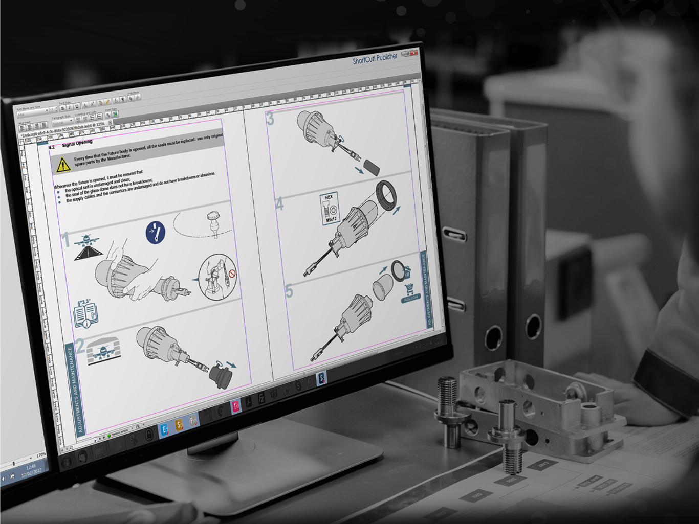

Trasmettere le informazioni tecniche è un'attività altamente specialistica perché un documento diventa davvero rilevante quando aggiunge valore e supporto al Prodotto.

Nel settore dell'automazione industriale e del packaging, la documentazione tecnica non è un semplice allegato formale, ma una componente integrante del Prodotto Macchina. Un manuale d'uso e manutenzione progettato con rigore riduce i tempi di commissioning, abbatte le chiamate di assistenza in garanzia e tutela legalmente il Fabbricante.
DUE.ZERO è il provider globale che trasforma la redazione tecnica in un vero e proprio processo industriale ingegnerizzato. Con un team specializzato di Technical Authors ed Illustratori Grafici, realizziamo documentazione per macchine automatiche, linee complesse e quasi-macchine, garantendo la piena conformità al nuovo Regolamento Macchine (UE) 2023/1230 e alla Direttiva 2006/42/CE.
Sviluppiamo l'intero ecosistema informativo di macchina, garantendo la massima chiarezza espositiva e la standardizzazione dell'interpretazione:
La ricchezza di un manuale risiede nell'efficacia del suo linguaggio visivo. Riduciamo i testi a favore di illustrazioni tecniche vettoriali e Viste Esplose 3D derivate direttamente dai modelli CAD originali del Costruttore. Utilizziamo la rappresentazione ad icone e pittogrammi normati per eliminare ogni ambiguità d'interpretazione da parte dell'operatore finale.
Tutti i progetti vengono gestiti in ambiente protetto tramite la nostra piattaforma 2.0 PROJECT WORKFLOW. Il Costruttore dispone di un portale collaborativo per il monitoraggio dei task, lo scambio dati in sicurezza e la configurazione automatica dei kit documentali in base al Paese di destinazione della commessa. Ogni documento pubblicato da DUE.ZERO è provvisto di certificato d'origine BarCode con tracciabilità in Blockchain, garantendo l'univocità e l'originalità del file per tutto il suo ciclo di vita.
Per i settori a elevate stringenza regolatoria (Pharmaceutical & Life Science), DUE.ZERO sviluppa e redige Protocolli di Validazione su misura (DQ, IQ, OQ, PQ) in accordo con le linee guida EU GMP e GAMP 5:
I protocolli sono fruibili sia in modalità tradizionale che in formato Digitale 4.0: tramite App mobile DUE.ZERO (iOS e Android), i collaudatori compilano le schede di test durante i FAT e SAT su tablet, allegando evidenze fotografiche e apponendo la firma digitale.